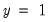

predict Equation Views Prediction table for binary and ordered dependent variable models. The prediction table displays the actual and estimated frequencies of each distinct value of the discrete dependent variable. Syntax eq_name.predict(n, options) For binary models, you may optionally specify how large the estimated probability must be to be considered a success (). Specify the cutoff level as the first option in parentheses after the keyword predict. Options n (default=.5) Cutoff probability for success prediction in binary models (between 0 and 1). prompt Force the dialog to appear from within a program. p Print the prediction table. Examples equation eq1.binary(d=l) work c edu age race eq1.predict(0.7) Estimates a logit and displays the expectation-prediction table using a cutoff probability of 0.7. Cross-references See “Binary Dependent Variable Models” for a discussion of binary models, and “Expectation-Prediction (Classification) Table” for examples of prediction tables.